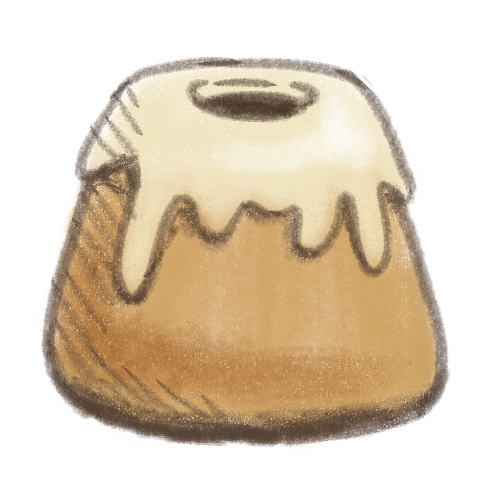

Sweetroll

"May you walk on warm sands"
This recipe is taken from The Elder Scrolls cook book, although the steps were a little bit simplified.
Ingredients
Rolls:
- 3 tablespoons unsalted butter, melted
- 1 cup warm whole milk
- 1 tablespoon honey
- pinch of salt
- 1 egg
- 2 teaspoons active dry yeast
- 2 cups all-purpose flour
Frosting:
- 2 tablespoons cream cheese, softened
- 2 tablespoons unsalted butter, softened
- 1/2 cup powdered sugar
- 2 tablespoons heavy cream
Steps
For the rolls:
- Preheat the oven to 180°C.
- In a large bowl, combine the butter, warm milk, and honey. Stir until the honey has dissolved.
- Add the salt and yeast, then egg and flour. Mix until you have a smooth batter.
- Spoon evenly into the 12cm Bundt pans.
- Leave it to rise for about 30min.
For the frosting:
- Cream together the cream cheese, butter, and powdered sugar in a small bowl. Gradually add heavy cream until you get a smooth, thick icing.
- Allow the rolls to cool down after they are finished baking, then spoon the icing over the tops of the rolls.